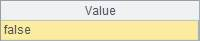

l Problem
A 13-digit string will be presented after the barcode is scanned. In order to deal with the scanning mistake , the method of calculateing checksum is used to inspect whether the barcode is error-free or not. Detailed calculation process is as follows:
Extract the first 12 digits from the 13-digit string, add the numbers at odd positions to obtain a sum S1, and add the numbers at even positions to obtain a sum S2. Subtract S2 from S1, perform a mod with the result and 10 to obtain the remainder, and compute the absolute value. The result should be the 13th digit of the barcode. Otherwise, this barcode is not correct.
Evaluate the correctness of a given barcode.
l Tip
General steps: Convert the 13 digits of the given barcode into a sequence, find out the sum of numbers at odd positions and that at even positions among the first 12 digits in the sequence, implement subtraction for the two sums, then perform a mod with the difference and 10 to obtain a remainder, whose absolute value will then be found, finally evaluate whether the result is equal to the last digit of the barcode.
l Code
|
|
A |
|
|
1 |
="1234567890123" |
The given barcode |
|
2 |
=A1.split@p() |
Convert the barcode into a sequence |
|
3 |
=A2(to(12)).step(2,1).sum() |
The sum of numbers on odd digits for the first 12 digits |
|
4 |
=A2(to(12)).step(2,2).sum() |
The sum of numbers on even digits for the first 12 digits |
|
5 |
=abs((A3-A4)%10) |
The difference between the two sums, mod 10, take the remainder's absolute value |
|
6 |
=A5==A2.m(-1) |
Evaluate whether the result of A5 is the same as the number on the last digit of the barcode |
l Result
